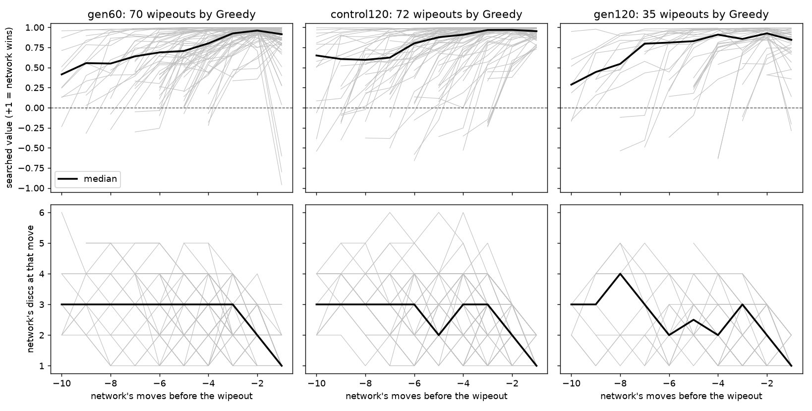

Meeting with Dr. Boutell
1. The three questions from October 22
Q1. If the agent trains against Greedy and Minimax, does it get better against other agents? Which families make a meaningful unseen test set?
The short answer is that we do not know yet, and the experiment is only worth running if the test set is genuinely unseen. The held-out roster and the admission rule were written before any training, in research/held-out-opponents.md.
- "Different" means a different source of knowledge. Search depth, added randomness, and playing strength do not make an opponent different. Greedy and Minimax-d4 both judge positions with hand-written rules (flip count; a corner, trap-square and mobility table). So corner-only or mobility-only heuristics, noisy Greedy, and Minimax at another depth are parts of the training opponents, and they stay in a seen-family control group rather than the held-out set.
- Proposed roster, one opponent per source: (1) Edax 4.6 at a level not used in training, candidate L7, whose evaluation is learned from a game database; (2) MCTS with random rollouts and no network or table, no knowledge at all; (3) a checkpoint from a different training run, as a strength-retention check; and if obtainable in time, (4) Egaroucid, an independent engine, and (5) a human-imitation policy trained on the WTHOR tournament database.
- A measured admission rule, run before training. On 500 saved mid-game positions, record each opponent's move. The agreement between Greedy and Minimax-d4 themselves is the baseline for "clearly different". A candidate that agrees with any training opponent more than that is not held out.
- Scorecard: one row per held-out opponent with its own interval, seen opponents reported separately, and a retention row. No single aggregate, because an average can hide a regression against one opponent behind a gain against another.
- Is "one opponent per source of knowledge" the right bar, and is random-rollout MCTS acceptable as a held-out opponent?
- Are Egaroucid and the WTHOR policy worth the build time for Phase 1, or should the required three be enough?
Q2. Can Edax be used as a training opponent, not only for evaluation?
Technically yes, with three things that have to be designed rather than assumed. The adapter used for evaluation (src/reversi/agents/edax.py, Edax 4.6 built from source on the cluster) already plays complete games move by move; what has not been verified is the training data path.
- Edax's moves cannot supply policy targets. In self-play, each position is stored with the share of search visits every move received, and the network learns to imitate that. Edax runs a different search and gives no such numbers. So Edax plies can only advance the game; only the agent's own moves yield training examples, roughly half as many per game as self-play. Groups must be matched on training examples and gradient updates, not on game counts.
- Value targets from a weak opponent bias the value head. Positions from games the agent almost always wins get labelled "winning" more often than in self-play. The Step 2 result below shows the value head is already overconfident in exactly this way, so this is a real risk and not a hypothetical one. The choice is between using external games for policy targets only, or for both and checking calibration afterwards. It has to be recorded before training.
- Cost accounting. Edax search time per move depends on level; equal game counts do not mean equal compute. The plan logs games, moves, updates, Edax depth and elapsed time per group.
- Status: the smoke test in the proposal (a few L3/L5 games in both colours, legality, pass handling, result signs, wall time) has not been run yet. It is a day of work and it is worth doing only if Group C is in scope.
Q3. What does an Edax level actually mean?
Verified from the Edax 4.6 source (src/search.c). A level is a rule that sets search depth and selectivity from the number of empty squares. It is not an Elo rating, not a separate trained network, and not a thinking-time budget.
- For levels 1 to 10, selectivity is 5, meaning no move is pruned, and
depth = leveluntilempties ≤ 2 × level, at which pointdepth = emptiesand Edax searches to the end of the game. L3 solves the last 6 empties, L5 the last 10, L7 the last 14. - So even a low level plays a perfect endgame, which Minimax-d4 does not. And every level shares one evaluation function learned from a game database plus the same search code. L3, L5 and L7 are correlated settings of one engine, not independent styles.
- Consequence for the design: a held-out Edax level is a held-out search configuration. It is still useful, because its knowledge source differs from Greedy and Minimax, but the roster needs opponents outside the Edax family too. For reference, the ownership-head network at 256 simulations beats L5 decisively and sits between L6 and L7.
2. Results
Step 0: protocol audit (merged, PR #52)
The historical "63% against Greedy" for Run 1 generation 60 rested on 30 games, interval 46% to 78%. The audit froze one evaluation protocol for everything that follows: 200 games per pairing, 50 simulations per move, four random opening plies with colours swapped on the same opening, Wilson intervals, Bradley-Terry ratings. It also added a third checkpoint so that each comparison changes one thing: gen60 (Run 1), control120 (same recipe trained to generation 120), gen120 (the ownership-head recipe at generation 120).
Step 1: the pattern reproduces, and every loss to Greedy is a wipeout (merged, PR #53)
3,000 games, six entrants. Gate A passed.
| checkpoint | vs Greedy [95%] | wipeouts | vs Minimax-d4 | rating (Random = 0) |
|---|---|---|---|---|
| gen60 | 64.5% [57.7, 70.8] | 70 | 95.8% | +527 |
| control120 | 64.0% [57.1, 70.3] | 72 | 96.5% | +584 |
| gen120 (ownership head) | 82.0% [76.1, 86.7] | 35 | 99.0% | +685 |
| Minimax-d4 vs Greedy | 98.2% | +335 vs +244 |
- 177 of the 179 network losses to Greedy are wipeouts: the network ends the game with zero discs, half of them within 13 to 15 moves of the opening and the earliest at move 5. No loss lasted 50 moves; the losses to Minimax-d4 almost all went the full distance. Greedy wiped Random 9 times and Minimax-d4 twice.
- No colour effect. The 90%/50% black-white split quoted earlier is withdrawn (Step 0).
- Twice the training (gen60 to control120) gains 57 rating points and changes nothing against Greedy. The ownership head halves the wipeouts at the same generation.
Step 2: why (PR #54, open)
Gate B passed: a repeatable failure pattern with a supported mechanism, and no causal claim. Five pieces of evidence, each from a different source.
- The network rates one disc as a near-certain win. In 172 of 177 wipeouts the searched value was still positive at the network's last move, median +0.91 to +0.95; the raw value before search is +0.99. It never turned negative more than one move before the end. Games the network won get the same estimate at the same stage: to the network they are the same situation.
- The losses were avoidable and the search saw the escape. A move surviving every reply Greedy might choose existed at the second-to-last move in every game and at the last move in 169 of 177. Those safe moves got a quarter to a half of the search's visits and were the runner-up in two thirds of the games. The search compared the safe move with the fatal one and chose the fatal one.
- The training data said this was fine. In Run 1's replay window (1,040,129 positions, about 18,000 self-play games, first eight plies excluded) a side holding one or two discs occurs about once per hundred games, and that side wins 74% to 81% of the time. In self-play nobody flips every disc it can, so a low disc count is never punished; it correlates with mobility and with winning, as it does in strong play. The network learned a rule that is true for the games it saw and never saw the boundary of it.
- More search helps and does not change what goes wrong. Same openings and seeds, more simulations per move:
| simulations | gen60: score, wipeouts | control120 | gen120 |
|---|---|---|---|
| 50 | 64.5%, 70 | 64.0%, 72 | 82.0%, 35 |
| 256 | 76.5%, 46 | 84.5%, 31 | 93.0%, 14 |
| 800 | 88.5%, 23 | 95.5%, 9 | 97.0%, 6 |
Each step removes a third to a half of the remaining wipeouts. Every remaining loss is still a wipeout, still avoidable one move earlier. Search compensates for the value estimate in proportion to how much of the tree it covers; it does not correct the estimate.
- The ownership head's effect holds on a second seed. A second training run of that recipe scores 76.5% [70.2, 81.8] against Greedy with 47 wipeouts, between the control (64.0%, 72) and the first seed (82.0%, 35). Direction holds, size varies by seed: "a third to a half", not "half".

What this does not establish. That changing the training distribution would fix it: Section 3 of the analysis describes the data, it is not an intervention. The ownership head is the closest thing to one, and it changes the learning target, not the opponents, so it says nothing about opponent diversity. Also not separated yet: how much is the value head's +0.99 versus the policy head's prior for Greedy's wiping reply.
- Is this chain of evidence a satisfactory Phase 1 result as it stands, or should the value-head versus policy-head probe come before the report?
- Does this settle the "opponent-specific weakness versus opponent strength" question from October 22? The weakness is specific to an opponent that flips every disc it can, and Minimax-d4, which is far stronger, never triggers it.
- The literature framing: this is the Wang et al. pattern (strong overall, exploitable by one simple policy) without a trained adversary. Is that the right way to present it?
3. Next steps and decisions
Cheap follow-ups inside Step 2 (days, cluster CPU)
- Separate the two heads. On a few dozen recorded pre-wipeout positions, read the policy prior the network assigns to Greedy's wiping reply and the value it assigns to the position after it. Says whether the fix is in the value target, the policy target, or both.
- A second disc-hungry opponent (for example Greedy with a corner preference, or Greedy at two plies). Says whether the weakness belongs to Greedy or to the family. Also feeds the similarity check.
- Run the similarity check on the roster candidates so the held-out set is frozen before any training.
Step 3 options (separate approval; GPU time on Gus or Gebru)
| option | what it tests | cost |
|---|---|---|
| A/B fine-tune from control120: continue self-play (A) versus self-play with a small share of games against Greedy and Minimax-d4 (B), matched on training examples, two seeds each | Does opponent exposure remove the wipeouts, and does it transfer to the held-out roster? | About 20 generations per run, a few GPU-hours each; four runs |
| Add Group C (Edax L3/L5 in the mix) | Is a mature engine a better training opponent than hand-written ones? | Smoke test first (one day), then the same as above plus Edax time |
| Mechanism-targeted intervention: value target only, no new opponents, for example an auxiliary disc-count target or relabelling few-disc positions | Is the value head the whole story? | Cheapest; the least aligned with the opponent-diversity question |
Recommendation: the A/B fine-tune with two seeds, Group C only if the smoke test is cheap. The full 120-generation runs from scratch are not needed to answer the question, and seeds matter more than generations here (two seeds of one recipe differed by 48 rating points earlier in the project).
Decisions needed
- Approve the held-out roster and the admission rule, or change them.
- Is Step 3 in scope for Phase 1, and which option? Value targets from external games: policy only, or both?
- What is the minimum convincing Phase 1 report? My proposal: Steps 0 to 2 plus the two-head probe, with Step 3 as the pre-registered next experiment, written up by mid-November.
- Whether the three pull requests (#52, #53 merged; #54 open) or only the report draft should be reviewed.
All numbers in this agenda come from research/step1-pilot-results.md, research/step2-failure-analysis.md and the reports under research/results/ in the repository; every table can be regenerated with the scripts named there.